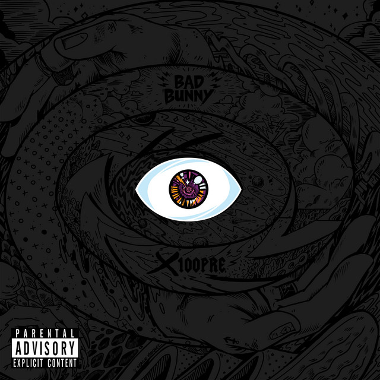
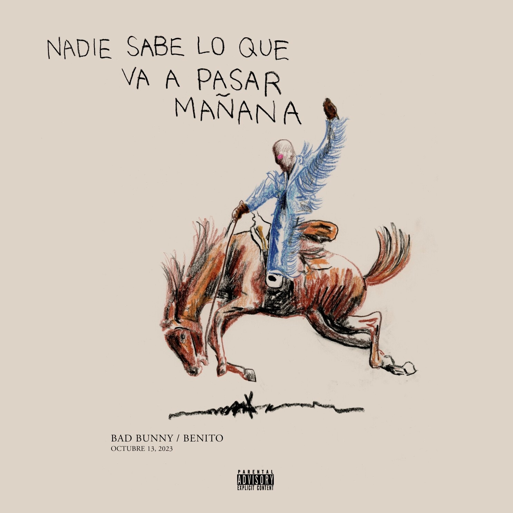

Orígenes humildes
Antes de ser famoso, Bad Bunny trabajaba como empacador en un supermercado en Puerto Rico. A pesar de sus inicios modestos, siempre soñó con dedicarse a la música.
Sus canciones con más reproducciones hasta el 2024
Este número se basa en número de reproducciones en spotify:
| # | Canción | Reproducciones |
|---|---|---|
| 1 | Me porto bonito | 2,221,000 |
| 2 | La canción | 2,022,000 |
| 3 | Callaíta | 1,864,000 |
| 4 | Títi me preguntó | 1,859,000 |
| 5 | Ojitos lindos | 1,639,000 |
Albúms de toda su carrera
| # | Nombre | Año de estreno | Portada |
|---|---|---|---|
| 1 | X100pre | 2018 |  |
| 2 | Oasis | 2019 | |
| 3 | YHLQMDLG | 2020 |  |
| 4 | El Último Tour del Mundo | 2020 |  |
| 5 | Un Verano Sin Ti | 2022 |  |
| 6 | Nadie Sabe Lo Que Va A Pasar Mañana | 2023 |  |
Cada álbum ha mostrado su evolución artística, desde sus inicios en el trap hasta su exploración de estilos más amplios como el pop y la música caribeña. Además, ha lanzado sencillos y colaboraciones que también han sido extremadamente exitosos.